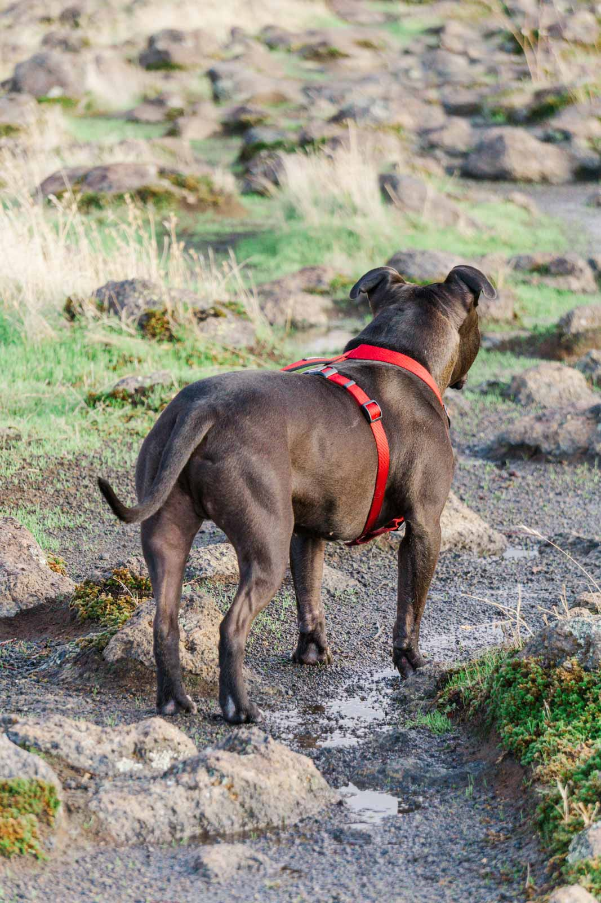
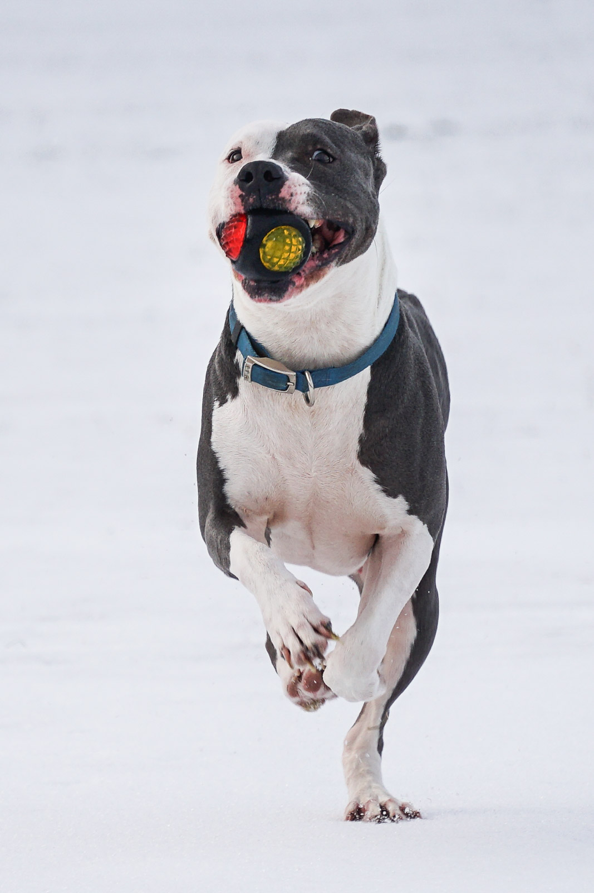
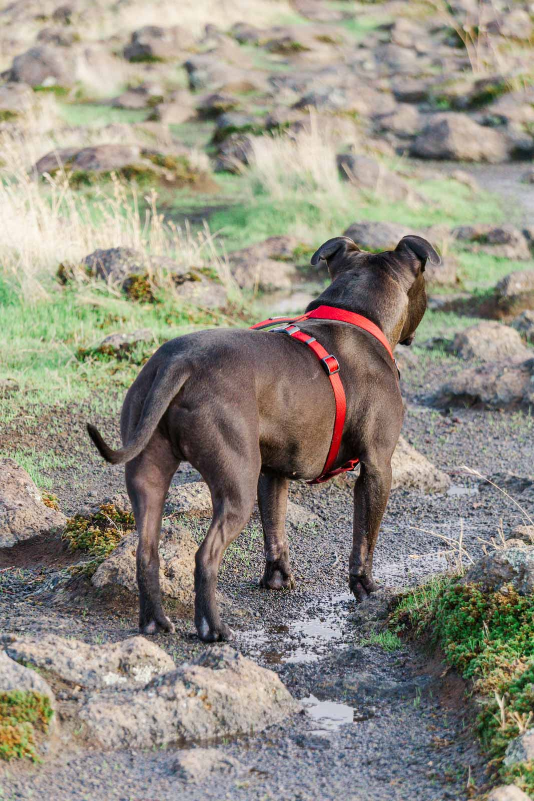
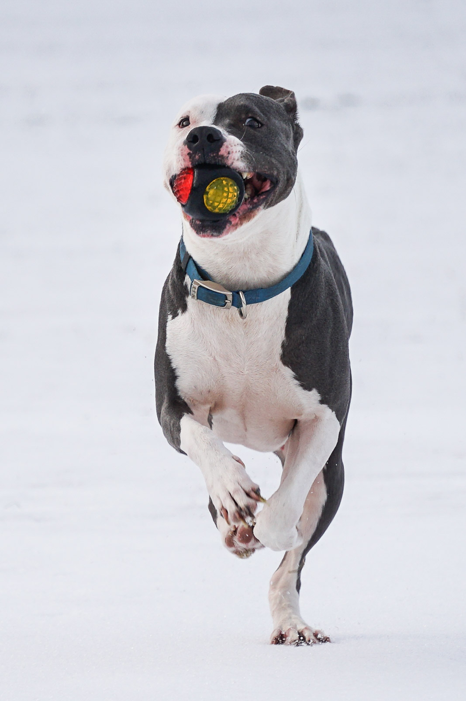

You're tired of watching it all fly by
and you want time to just hold up and stand still
You’re in the middle of the whirlwind and as chaotic as it might be, it is everything. And it all goes by so freaking fast.
You want to remember those gap teeth, the funky hair, the glee and spark in their eyes before they become amazing adults. You just need photographs that capture their little personalities, your families love before they no longer want to be lovey dovey, memories that you can look back on whenever you want!
That’s exactly where I come in.
I’m Adriana, and I love freezing time for the smiles and that love for those who never want to forget these years that speed by so fast. For those busy mommas that want memories they can look back on and remember all the beauty of it!
Of course we can all take photos with our phones, but this often means you will be on the wrong side of the camera.
Having someone else clicking away while you interact with your family is such a different experience that I can provide you. We can do longer sessions to give you a crazy variety of pictures to choose from, or a much shorter session for those with a time budget.
WHO IS BEHIND THE LENS?
I am a pizza loving mom of one beautiful and amazing daughter (Artemis), and the wife of a gorgeous and awesome husband (Jesus). I was born a creative person and can do all kinds of artsy fartsy things (the reason for the “etc” in AG Photography etc).
Photography wasn’t really a thing in my life until the year 2015 when I got my first point and shoot camera and headed to Alaska. Of course with views like those, I only cared about landscapes, then my now husband came into the picture (literally!), then the dogs, then my littles, and now I want to shoot everyone!
 




I am also a Full Stack Development online student through Emeritus at MITxPro, and someday my husband and I, with the precious one of course, hope to travel all over the place! I have watched Supernatural like 10 times now, The Office about 7 times, and Encanto like twice a day since it became available on Disney+ (not just because Artemis likes it).
Also totally random, but I get asked a lot about my glasses, I got them at zeelool.com (I do not get any kind of commission from this link, though it would be cool). The design is called Cicely, sometimes they have DEEP discounts, so if you are interested, be on the look out for that